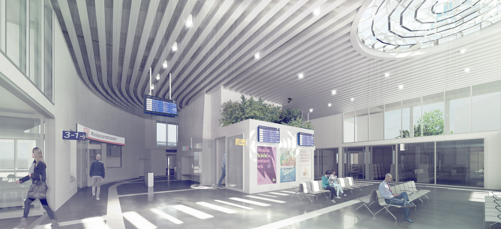
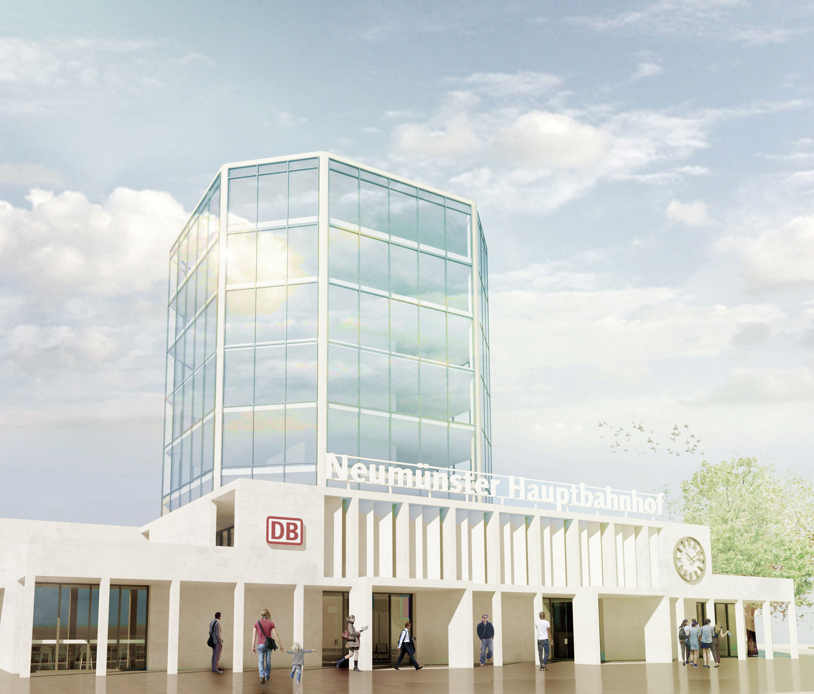
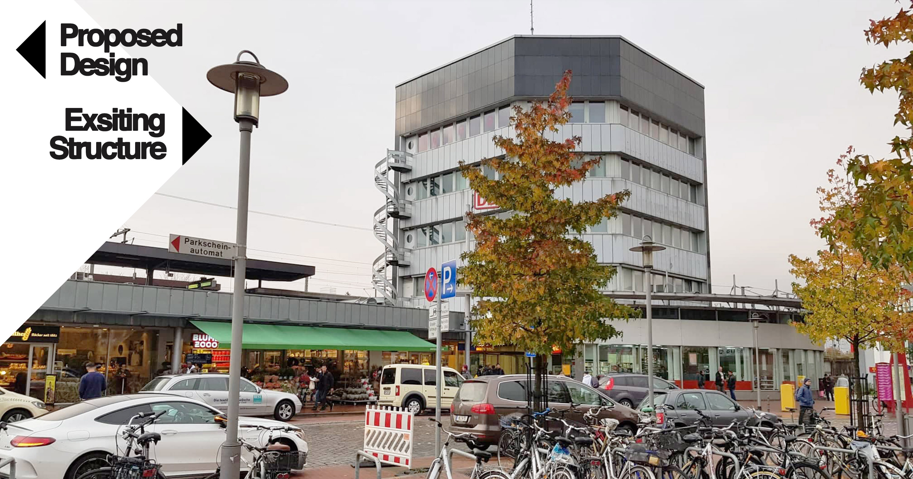
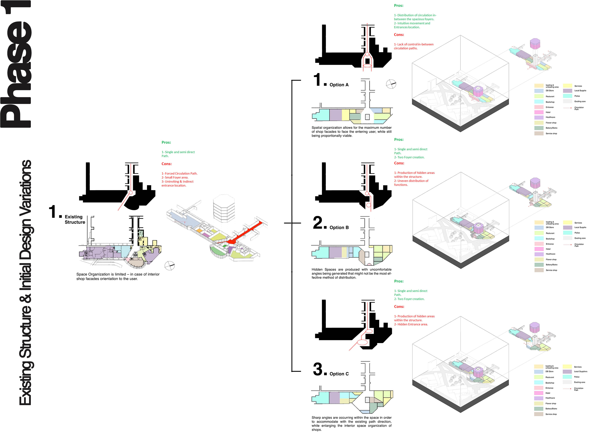
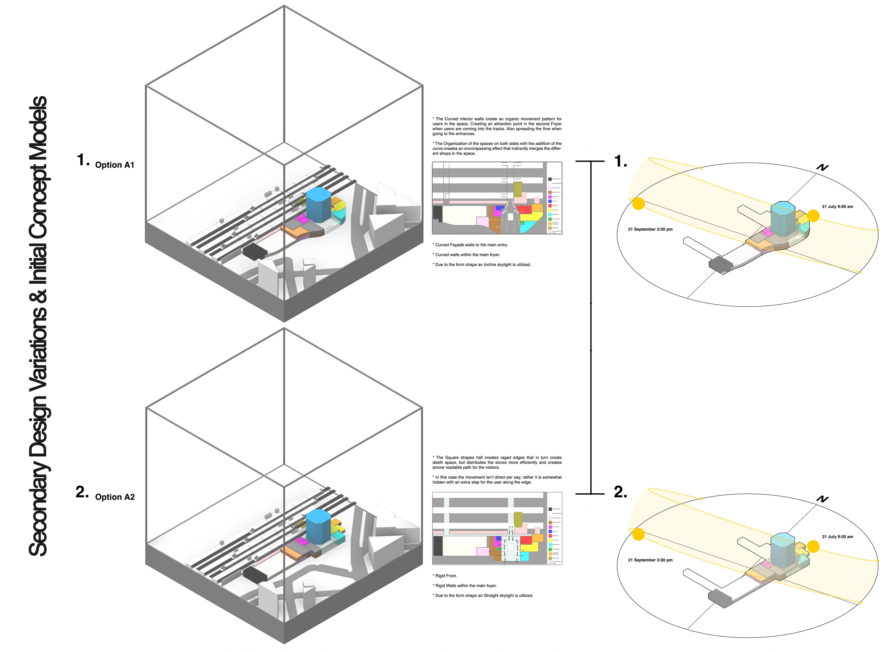
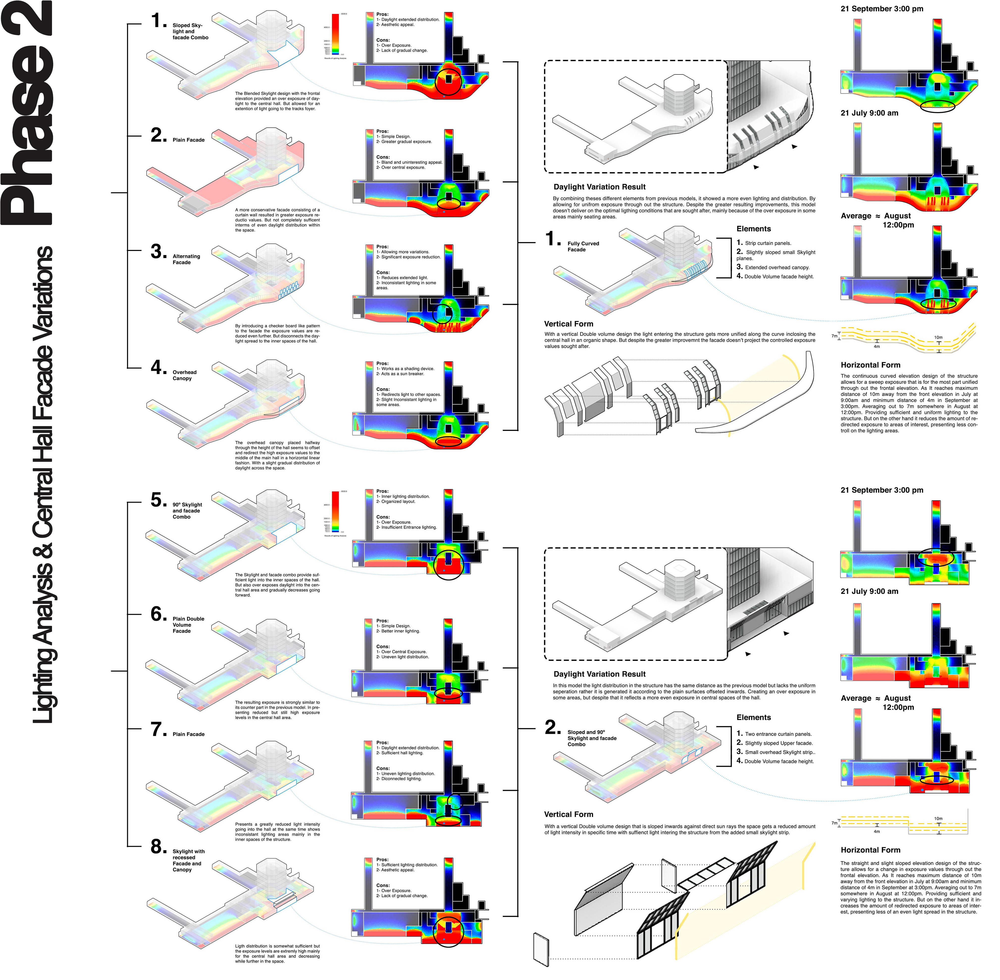
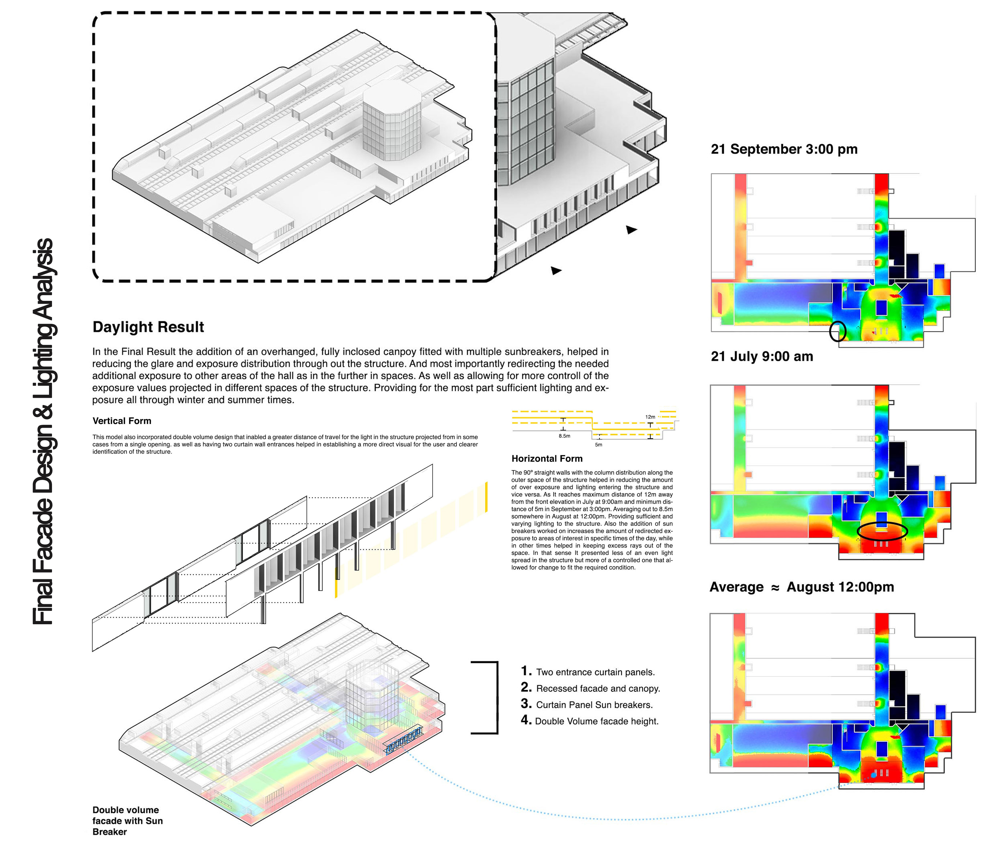
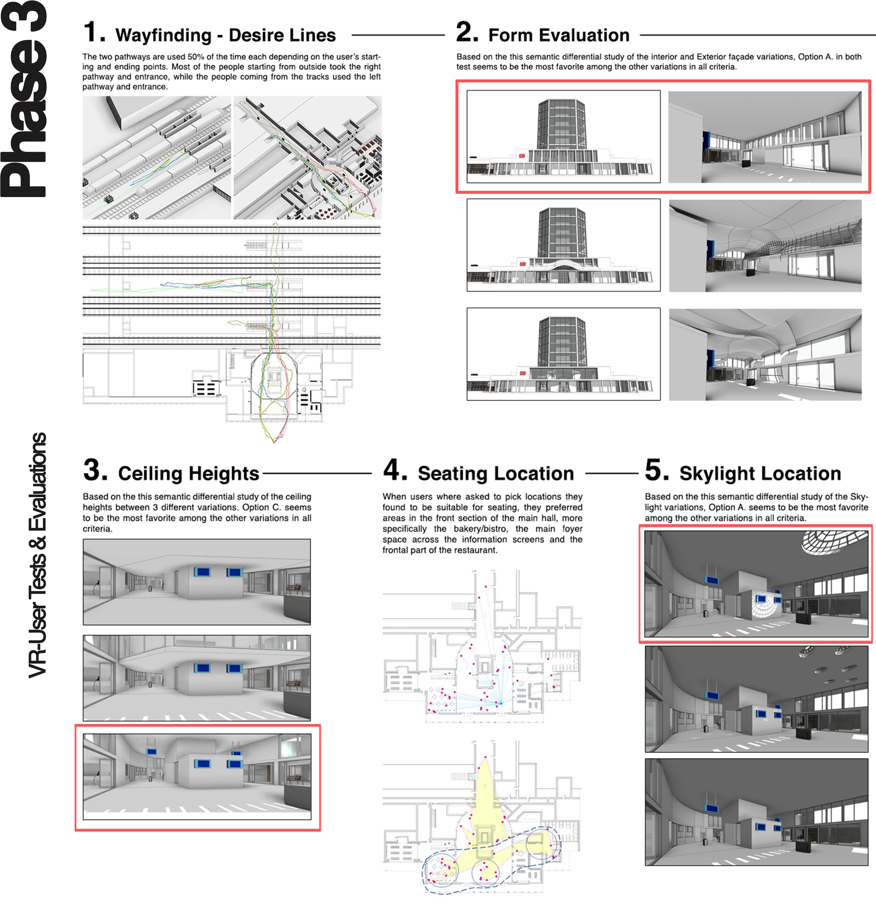

Neumünster Hbf Redesign
Year | Winter 2019 | 2nd Year MSc.
Type | Central Train Station


The concept is derived from redesigning the station entry into a more accommodating and pronounced hall, simultaneously, maintaining its existing exterior characteristics. The existing structure shows a limited arrangement of functions within the space, while others were usually hidden and not easily accessible. Guidelines for the proposed design focused on; separating entry Pathways, redistributing functions, increasing ceiling heights, increasing daylight exposure, maintaining the vertical circulation core and the top hexagonal structure.
 
 
